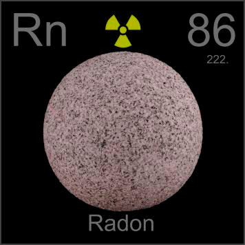

HOME
PREVIOUS
NEXT

Radon
Atomic Weight: 222[note]
Density: 9.73 g/l[note]
Melting Point: -71 °C
Boiling Point: -61.7 °C
Radon is an invisible, radioactive gas, thus hard to photograph. This granite ball reminds us that the source of most radon in people's basements is the decay of traces of uranium and thorium in granite bedrock.